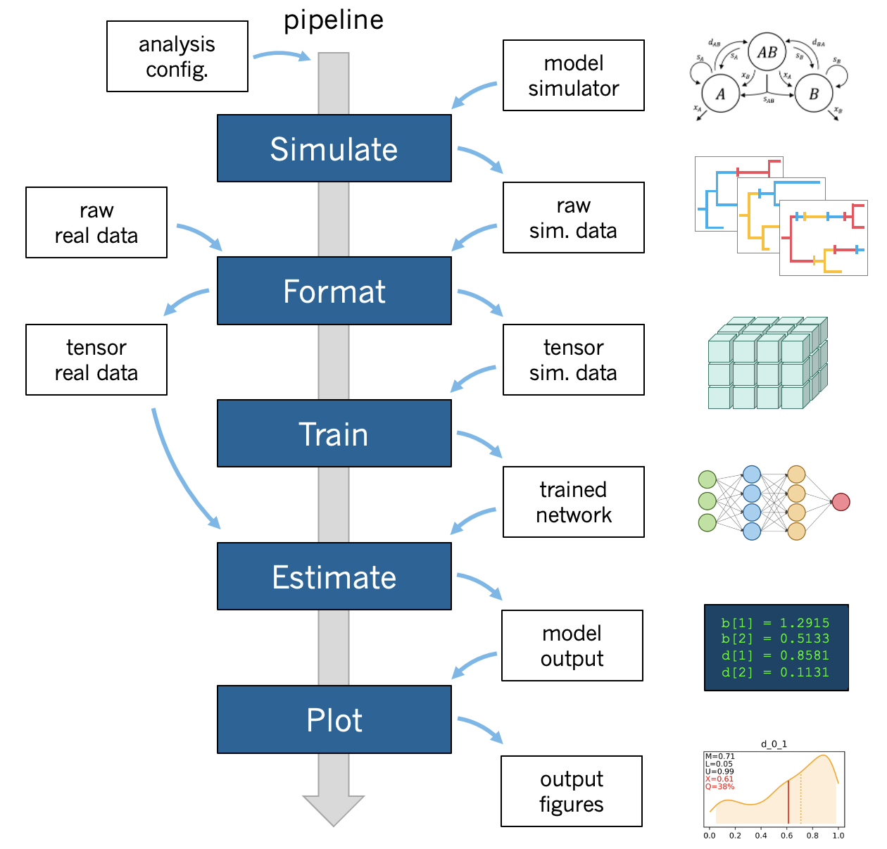

phyddle
phyddle is software for phylogenetic model exploration with deep learning. As a command-line tool and/or as a Python package, phyddle is designed for simulation-based supervised learning to train neural networks for phylogenetic model estimation tasks.
A standard phyddle analysis performs the following tasks for you:
{kind=link}
Pipeline configuration applies analysis settings provided through a config file and/or command line arguments.
Simulate simulates a large training dataset under the model to be Formatted (parallelized, partly compressed).
Format encodes the raw simulated data into tensor format for Training.
Train shuffles and splits training data, builds a network, then trains and saves the network with the data for Estimation.
Estimate produces model estimates for a new dataset with the trained network.
Plot generates figures that summarize the training data (Format), the network and its training (Train), and any estimates for new datasets (Estimate).
In addition, phyddle is distributed with example scripts to simulate phylogenetic training datasets using R, Python, RevBayes, PhyloJunction and MASTER. See Examples for more information.
To learn how to use phyddle, we recommend exploring the topics from top-to-bottom as listed on the left-hand side of this page. Visit the Quick start and Installation pages to get started.
Visit the GitHub Discussions page to interact with other phyddle users and receive help.
Please cite